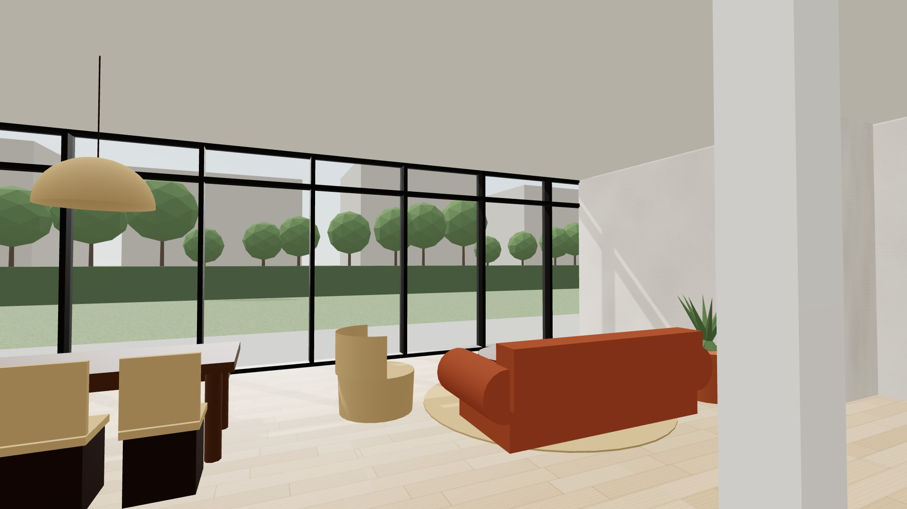

How it works

01
A first-person walk through a real apartment, in the browser. No install.
02
Only steady looks count: turning under 20°/s, moving under 0.6 m/s.
03
Every pane, mullion and sofa is tagged with its IFC class and specification.
04
The report names the glass, with its make-up, VLT and g-value.
Visual Vibes · glazing study